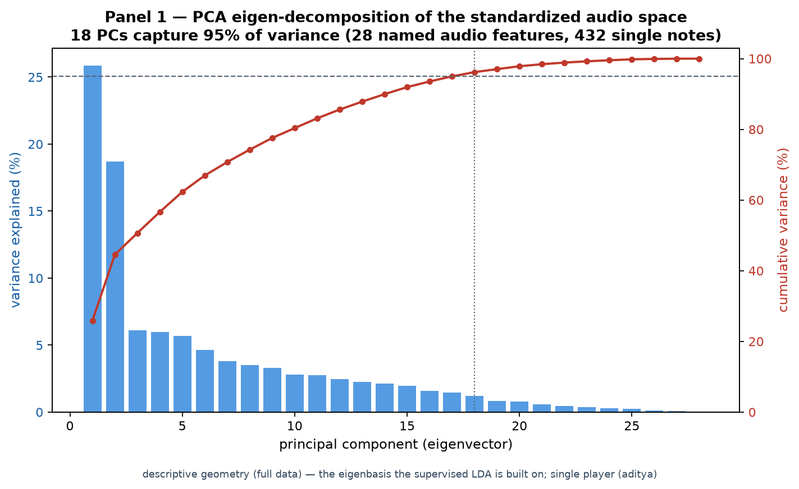
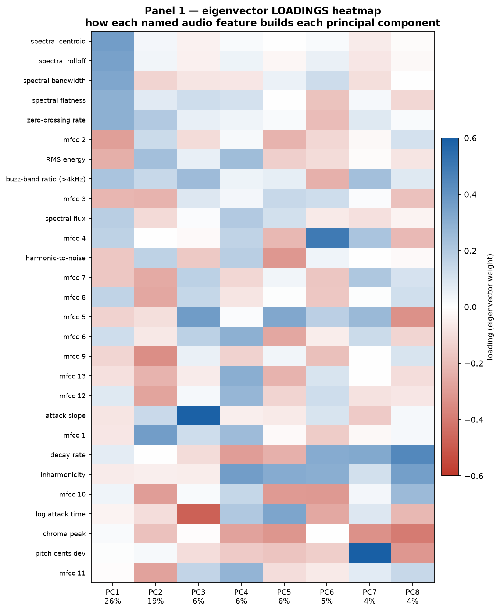
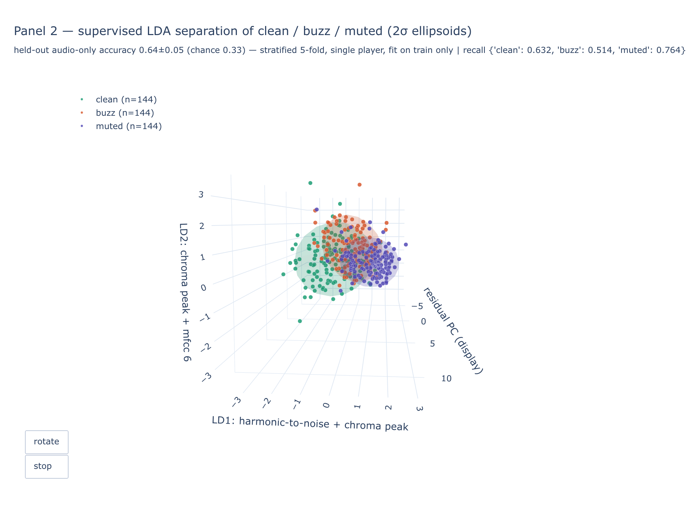
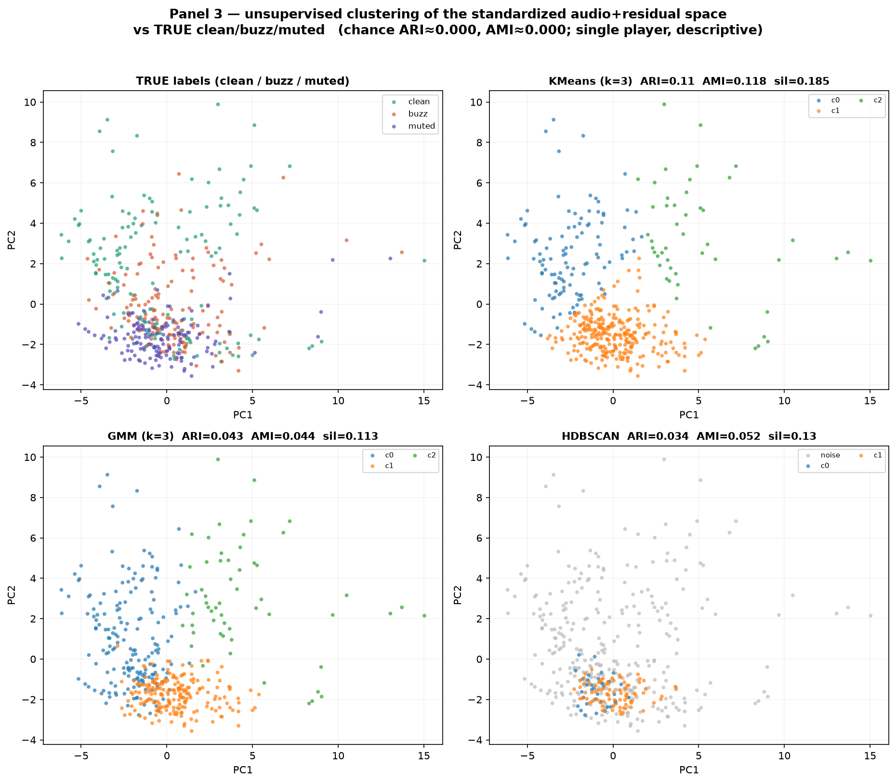
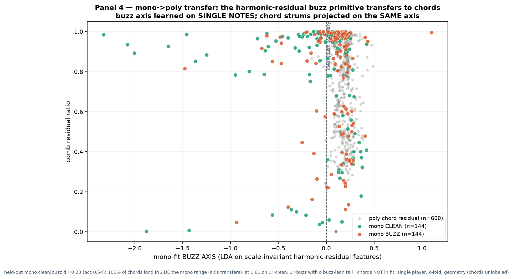

Eigen-decomposition: scree, cumulative variance, loadings heatmap
PCA = the eigendecomposition of the standardized audio covariance matrix. 18 principal components capture 95% of variance across 28 named audio features. The loadings heatmap shows what each eigenvector MEANS: PC1 ≈ spectral centroid. Descriptive geometry (full data) — the basis the supervised model is built on.


open loadings heatmap ↗Supervised LDA separation (rotating 3D, 2σ ellipsoids)
LDA finds the axes that SEPARATE clean / buzz / muted where raw PCA blobs. Axes are titled by their top named-feature loadings; ellipsoids are 2σ class covariances. The number is honest: held-out audio-only accuracy 0.64±0.05 vs chance 0.33, stratified 5-fold, single player, all preprocessing fit on train folds only. Static PNG below; rotating version is the interactive link.

Feature-based clustering vs true labels (named clusters)
KMeans, GMM and HDBSCAN on the standardized audio+residual space, scored against the TRUE clean/buzz/muted labels and a permutation chance floor (ARI≈0.0004). KMeans recovers structure far above chance (ARI=0.11, AMI=0.118). Each discovered cluster is NAMED by its most extreme standardized-feature means — geometry mapped to meaning.

Mono → poly transfer money shot
The SCALE-INVARIANT harmonic-residual buzz axis learned on single notes (held-out clean|buzz d'=0.227) transfers to chords: 600 chord strums projected on the SAME axis land INSIDE the mono cluster range (100%), at 1.613 on a 0=clean..1=buzz scale with a buzz-lean tail — exactly H2's prediction that the residual fault primitive is the same physical object mono and poly. Honest tradeoff: the full-audio axis separates mono far better but does NOT transfer (domain shift). Chords fully held out; geometry only (chords are unlabeled).
